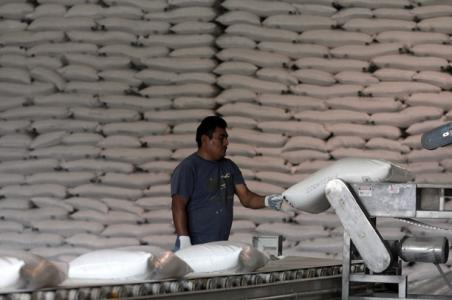
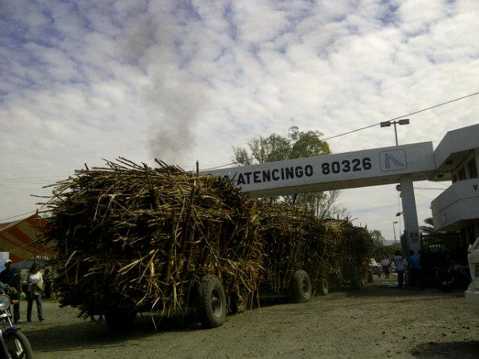
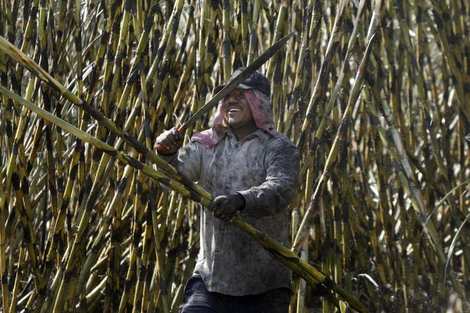
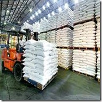
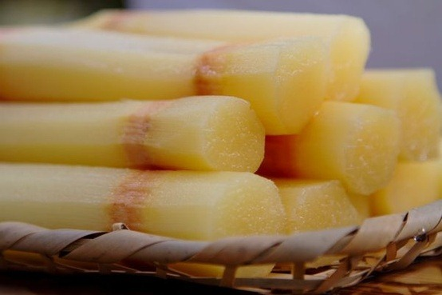

¿Quiénes Somos
Ingenio Atencingo
Somos una empresa con grandes cualidades equitativas, tenemos el primer lugar en producción azucarera en el país, y tenemos el segundo lugar a nivel mundial, Atencingo es la mejor región en cosecha de caña de azúcar ya que nuestra empresa por 6 meses de trabajo (ZAFRA), se procesa casi 2 millones de toneladas de caña de azúcar en pocas palabras, somos el ingenio más productor de azúcar.
Misión
Endulzar, satisfaciendo necesidades alimenticias y energéticas de los clientes, con azúcar estándar de calidad 100% caña, mejorando nuestros procesos, el medio ambiente y el desarrollo de los colaboradores.

Visión
Nuestra Visión es ser la mejor empresa productora de azúcar a nivel mundial, ya que tenemos desde hace mucho tiempo el primer lugar a nivel nacional y ahora con nuestras altas cantidades de azúcar estándar esperamos con grandes cualidades ser el mejor ingenio del mundo.

Valores y Principios
- Cliente:Razón de ser y motivo de nuestra superación.
- Compromiso:Los resultados y el espíritu del servicio.
- Competitividad:Ser mejor en la industria.
- Equipo:Fuerza, unión y armonía para lograr objetivos comunes.
- Familia:Motor que nos da la energía para el bien "ser" y bien "estar" del equipo.
Imagen.
- "Uniendo esfuerzos cosechamos progreso en beneficio de nuestros clientes y nuestras familias"

Ingenio de Atencingo
Noticias
Azúcar de Atencingo al Distrito Federal
Más de 14 mil toneladas de azúcar se trasladan a bodegas del Distrito Federal debido a que las bodegas del Ingenio de Atencingo están a punto de llegar a su máxima capacidad lo que podría desencadenar que la zafra se detuviera en Atencingo, Puebla

Detectan cañeros de Atencingo desfalco en KARBE
El secretario General de la Confederación Nacional de Productores Rurales (CNPR) del Ingenio de Atencingo, Arturo David García Azcue, dijo que en la factoría se ha detectado un desfalco hacia los productores en cuanto al concepto Kilos de Azúcar Recuperables Base Estándar (KARBE)

Liberan producción de azúcar en Atencingo
Debido a que las bodegas del ingenio Atencingo llegaron a 93% de su capacidad en almacenaje de azúcar, los cañeros -que mantienen desde hace 15 días bloqueados los accesos de la fábrica- permitieron este domingo la salida de los primeros cargamentos para evitar sobrecupo del producto.
Ingenio de Atencingo
Equipo de Trabajo
"Hermanitos 10"
Este equipo de trabajo se dedicó a trabajar día y noche para realizar este proyecto en Jquery y JavaScript, los nombres que conforman el equipo de trabajo son:
Nestor Sanchez
Edad:
16 Años.Pasatiempos:
Programar en JavaScript, Jugar con mis mascotas, patinar, etcDescripción
Amable con las personas buenas, Sociable, Inteligente, Fornido y Reservado
Iris Ruiz
Edad:
17 Años.Pasatiempos:
Jugar con los animales, jugar basquetball, ver TV principalmente Avenida Brazil, Comer de todoDescripción
Sociable, Divina, alta con grandes valores y principios, decente con grandes cualidades equitativas
Laura Mejia
Edad:
17 Años.Pasatiempos:
En pocas palabras Programar, y salir con los divinosDescripción
Sociable, linda, chaparrita, virgen, con muchas metas en la vida sociable con principios y valores eticos.
Miryan Estrada
Edad:
17 Años.Pasatiempos:
Estar en casa, internet, socializar un poco, etc.Descripción
chaparrita, reservada, bonita.....
Uriel Baizan
Edad:
17 Años.Pasatiempos:
Salir a divertirse al zocalito, salir con su novia, jugar videojuegos, ayudar en los deberes hogareños....etc.Descripción
medio alto, complexion delgada, color de piel morena. respetuoso, amable...etc.
Ingenio de Atencingo